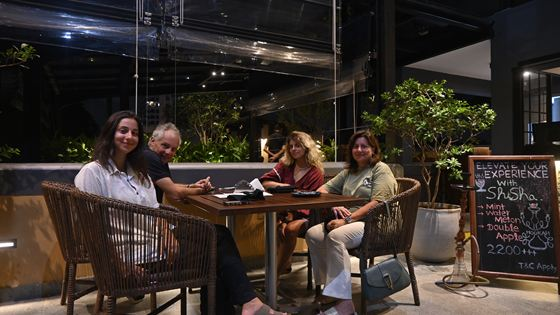
Where to eat in Colombo 3, from the people at the desk
Our answer to the question guests ask most: where to eat on foot in Kollupitiya, where to take a tuk-tuk, and what to know about Sundays and Poya days.
Read this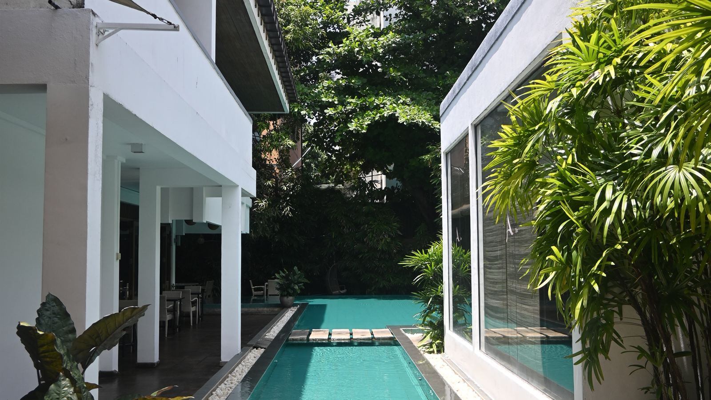
Colombo Court Blog
Notes on Colombo and on this building, written by the people who work in it. Where to eat, how to get in from the airport, and what the rain does.

Our answer to the question guests ask most: where to eat on foot in Kollupitiya, where to take a tuk-tuk, and what to know about Sundays and Poya days.
Read this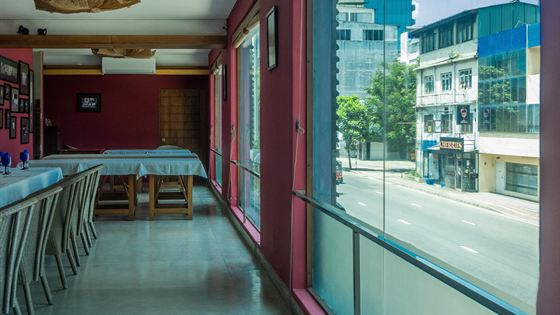
About 35 km and 45 to 60 minutes, with four ways to make the journey. How each one works, what to do after a 3am landing, and where to change money.
Read thisWhat high tea means in a country that grows its own tea, what is served on the stand, what it costs at Colombo Court, and the best time of day to book it.
Read thisColombo Court was the first city hotel in South Asia to be certified CarbonNeutral. Here is what that means in our building and in how we run the hotel.
Read this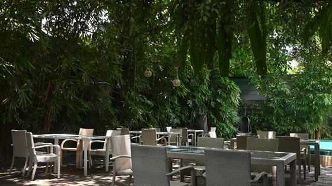
The island has two monsoons at different times of year, so there is no bad season, only the wrong coast. Month by month, where to go and when prices are lower.
Read this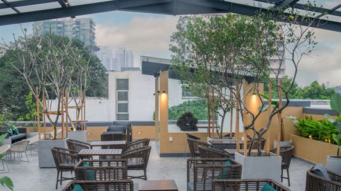
Most visitors give Colombo one night on the way to somewhere else. Two days is enough to enjoy the city properly, and this is the order we recommend.
Read this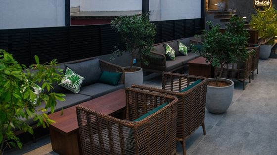
Kollupitiya lies between Galle Road and the sea, and most of its highlights are within a twenty-minute walk. Here is what to see, and in what order.
Read this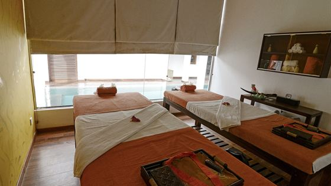
They are not two versions of the same treatment. One works on the muscles, the other on the whole body, so the choice depends on how you want to feel afterwards.
Read this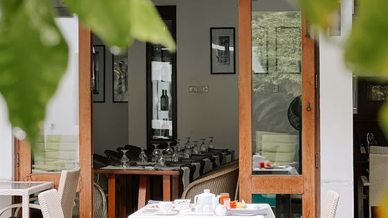
Hoppers, string hoppers, pol sambol, kiribath and a curry before eight in the morning. What each dish is, how to eat it, and why it is worth getting up for.
Read thisEvery window here looks onto a planted garden rather than out at the city. It began as a practical solution when the building was converted.
Read this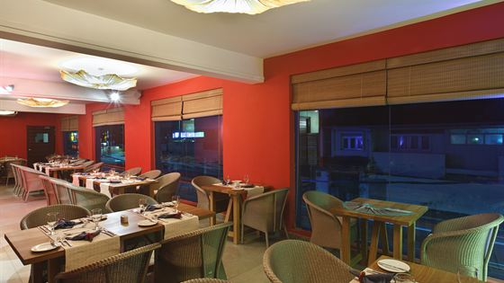
Internet, time zones, power and the best places to work. A practical guide for anyone planning to work remotely from Sri Lanka for a week or more.
Read this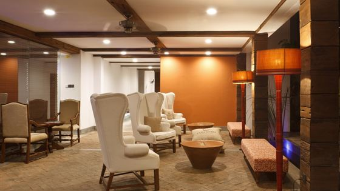
Two monsoons, and neither of them ruins a visit. What rain in Colombo is really like, how to spend a wet hour, and why the rainy months are good value.
Read this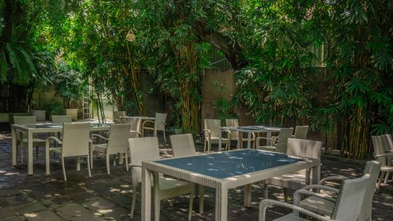
One night, two days or four? A practical answer for a city that many people treat as an airport stop, from a team who want you to enjoy it.
Read this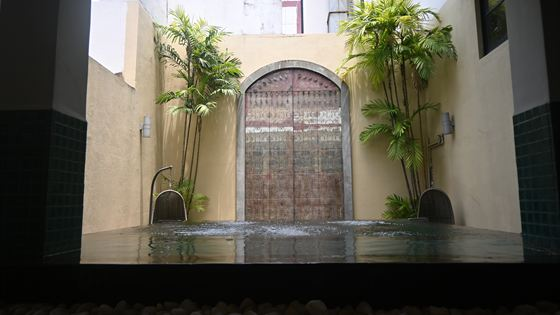
How each way of getting around works, when walking is faster than driving, how to avoid being overcharged, and the train journey worth planning a morning around.
Read this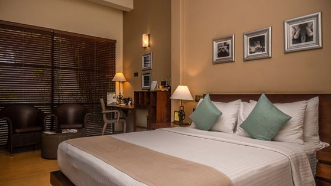
Thirty degrees and humid every day, temples with a dress code, cold air conditioning and sudden rain. A short packing list, since most things can be bought here.
Read this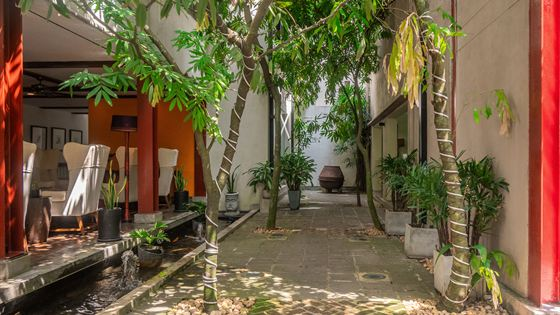
It has few major monuments, it is less photogenic than Galle, and many guidebooks suggest skipping it. Here is a fair case for and against, from a Colombo hotel.
Read this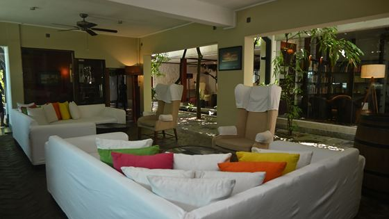
Why the country is Sri Lanka but the tea is still Ceylon, how growing altitude affects the flavour, and how to buy good-quality tea to take home.
Read this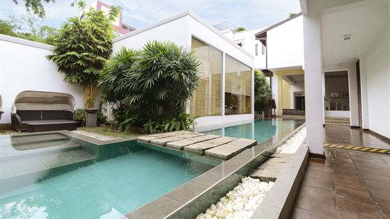
What to wear, what happens to your clothes, how much pressure to ask for and whether to talk. Common first-time questions, answered clearly so you can relax.
Read this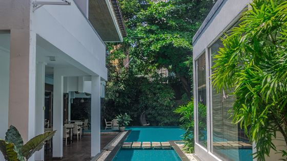
Many hotels in Colombo describe themselves as green. Here are the questions worth asking to understand what a hotel really does, and how we answer them ourselves.
Read thisCapacities, the monsoon question, what a venue should tell you upfront, and the case for a small wedding in a garden rather than a large one in a ballroom.
Read thisNothing matches that.
Thirty-one rooms around one garden, in the middle of Colombo 3.